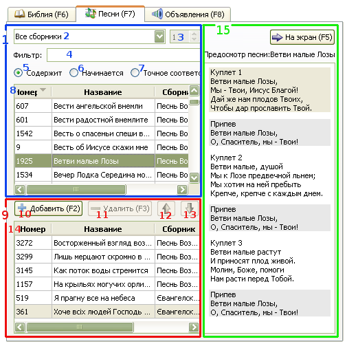

2.3 Показ песен
Для показа песен:
Можно держать открытыми сразу все сборники и выбирать песни с помощью фильтра.
Но для того чтобы задавать номер песен в окошке справа, нужно выбрать конкретный сборник.
Для выбора песни можно воспользоваться списком (8).
Если выбран конкретный сборник, то можно ввести номер песни
либо в окошко с номерами (справа), либо в окошко фильтра.
После того как песня выбрана, она заносится в окно предосмотра. Щелчок по кнопке
"На экран" автоматически выводит для показа первый куплет песни.
Если необходимо вывести на экран другой куплет или припев, нужно дважды щелкнуть
по этому куплету в окне предварительного просмотра.

1. Блок просмотра песен:
Выберите конкретный сборник. Если выбрана опция "Все сборники", в списке (8) будут показаны все песни, имеющиеся в базе данных. Если выбран конкретный сборник, в этом списке будут показаны только песни с данного сборника.
Это окошко активизируется только тогда, когда выбран конкретный сборник, и остается серым, если выбрана опция "Все сборники". При вводе номера в это окошко, выводится полный список песен сборника, в котором выделяется песня с заданным номером.
Сюда вводится текст или фраза искомой песни. В списке будут показаны лишь песни, соответствующие заданному тексту.
Выводятся все песни, где встречается заданный текст. Поиск производится только по номерам и названиям песен, но не по всему тексту.
Выводятся все песни, которые начинаются по заданному тексту.
Выводятся только песни, точно соответствующие заданному тексту. Эта опция особенно полезна при поиске конкретного номера песни. Ее можно использовать вместо номерного окошка (3).
Может содержать либо полный список песен, либо результаты поиска. Щелчок по названию песни в этом списке отсылает ее в список предосмотра. Двойной щелчок добавляет песню в список воспроизведения (плейлист).
9. Список воспроизведения:
Здесь песни заносятся в список воспроизведения и там сохраняются.
При ее нажатии, выбранная песня добавляется в список воспроизведения. Эта кнопка активизирована только тогда, когда песня выбрана в списке песен и этот список находится в фокусе; она становится серой, если в фокусе находится список воспроизведения.
Удаляет выбранную песню из списка воспроизведения.
Перемещает песню вверх в списке воспроизведения.
Перемещает песню вниз в списке воспроизведения.
Содержит песни предназначенные для вывода на экран. Щелчок по названию песни в этом списке отсылает ее в окно предварительного просмотра. Двойной щелчок выводит ее на экран.
15. Блок предосмотра:
В этой части интерфейса можно просматривать и прочитывать песню
перед выводом ее на экран. Сюда выводятся и автоматически сменяют друг друга
те песни, которые выбираются в списке песен или в списке воспроизведения.
Щелчок по кнопке "На экран" отсылает выбранный куплет песни на экран.
То же самое делает двойной щелчок по выбранному куплету.